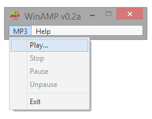
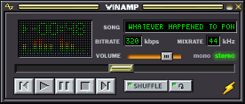

WinAMP (nótense las mayúsculas) nació como un proyecto personal de Justin Frankel y Dmitry Boldyrev, antiguos estudiantes de la Universidad de Utah. Al principio, no era más que una interfaz gráfica muy sencilla para hacer más cómodo el uso de AMP en sistemas Windows. Era tan sencilla que, básicamente, contaba con la barra de título y con una barra de menús con unos pocos comandos (reproducir, pausa...). Ya era un comienzo. Aunque no se parecía en nada a lo que fue después. Carecía de tantas características que no podía ni reproducir una lista de canciones, sino canciones de una en una, arrastrando la canción al icono de la aplicación. Pero era un comienzo. Muy poco después aparecería una nueva versión que ya se parecía más a lo que conocemos como Winamp clásico, con controles de reproducción, indicadores de estado y más.
Winamp 1 fue lanzado en junio de 1997. Licenciaron AMP para incluirlo como parte de su aplicación (aunque más tarde dijeron haberlo sustituido por Nitrane, un motor desarrollado por la propia Nullsoft) y acabó cambiando el precio de la aplicación: de ser totalmente gratuita pasó a ser shareware con un precio de 10 dólares. La primera versión de Winamp con soporte para plugins fue Winamp 1.90. También fue la primera en incluir un archivo de MP3 que hacía mención al trasero de una llama. El éxito fue importante: Winamp había sido descargado, en julio de 1998, más de tres millones de veces.
Casi nadie recuerda versiones tan antiguas de Winamp. La que verdaderamente "partió la pana" fue Winamp 2, cuyas posteriores actualizaciones hicieron que fuera una de las piezas de software más descargadas y utilizadas de la historia. Lanzada en septiembre de 1998, ya impresionaba por su interfaz gráfica, rompedora con lo que había en la época, y que además era totalmente personalizable (podríamos cambiar por completo la skin de Winamp). Acabaron pasando de su propio motor decodificador de MP3 para licenciar el de Fraunhofer (que fue quien desarrolló el formato MP3, al fin y al cabo). Además, por otra parte, llegaron a un acuerdo fuera de juicio con PlayMedia (actuales propietarios de AMP), por lo que su litigio legal con ellos finalizó. Lo verdaderamente importante de esta época fue que llegaron a atraer, tanto con Winamp como con SHOUTcast (un servidor para emitir audio en streaming), la atención de una gigante de Internet como era America OnLine. Nullsoft fue adquirida por AOL por 80 millones de dólares en acciones, convirtiéndose automáticamente en una subsidiaria de AOL.
Nullsoft continuó con el desarrollo de Winamp 2 dentro de AOL, así como de otros productos y proyectos. Alcanzó un total de 22 millones de usuarios para el año 2000. No desarrollaron únicamente Winamp, eso sí. Algunos proyectos paralelos de Nullsoft fueron NSIS, un proyecto de código abierto que fue desarrollado para distribuir Winamp, o el propio servidor SHOUTcast. También fueron desarrolladores de la red Gnutella, aun en contra de AOL. Desarrollaron, también, NSV, un formato destinado a distribuir audio y vídeo en streaming con cualquier códec. AOL llegó a utilizar este formato para alguno de sus servicios.
En 2002 Nullsoft (ya integrada dentro de AOL) lanzó una versión reescrita desde cero de Winamp. De número de versión 3, había sido desarrollada de manera paralela a Winamp 2, e incluía novedades como un gestor de librerías musicales. No obstante los usuarios no aceptaron esta versión, primero por consumir demasiados recursos del sistema, y segundo por resultar bastante inestable. Además, para remate, no admitía streaming de emisoras SHOUTcast (y jamás lo recuperó). Nullsoft lanzó, incluso, una versión alpha de Winamp 3 para Linux, pero no continuaron su desarrollo, pese a las continuas súplicas de sus usuarios. Winamp 2.9 y posteriores fueron lanzadas, aludiendo además con sorna a Winamp 3. Por esta época, Time Warner estaba litigando con Napster. ¿Significa esto que Nullsoft se quedó con Winamp 2 hasta el final de sus tiempos? Para nada. Frankel, aun en tensiones con AOL gracias a Gnutella y a otros proyectos que no les gustaron, se quedó en Nullsoft hasta el lanzamiento de Winamp 5. No existe Winamp 4, e incluso hicieron un chiste: "nobody wants a Winamp 4 skin". Si alguien quiere, que busque el significado de la palabra "foreskin" en cualquier diccionario inglés-español. En su lugar fue lanzado Winamp 5 como la suma de Winamp 2 y Winamp 3.
Hasta la fecha, esta es la última versión de Winamp e incluye lo mejor de Winamp 2 (su robustez, soporte para skins clásicos) y de Winamp 3 (el nuevo framework sobre el que construir la aplicación). Permitía desarrollar skins mucho más rompedoras que las existentes hasta la época (podemos cambiar la estructura de la aplicación, no únicamente su aspecto externo).